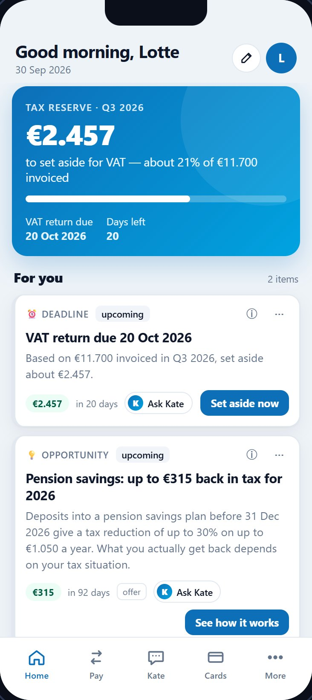
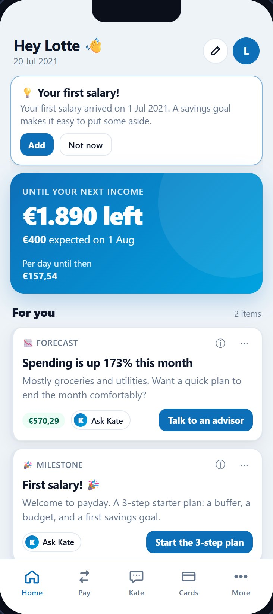
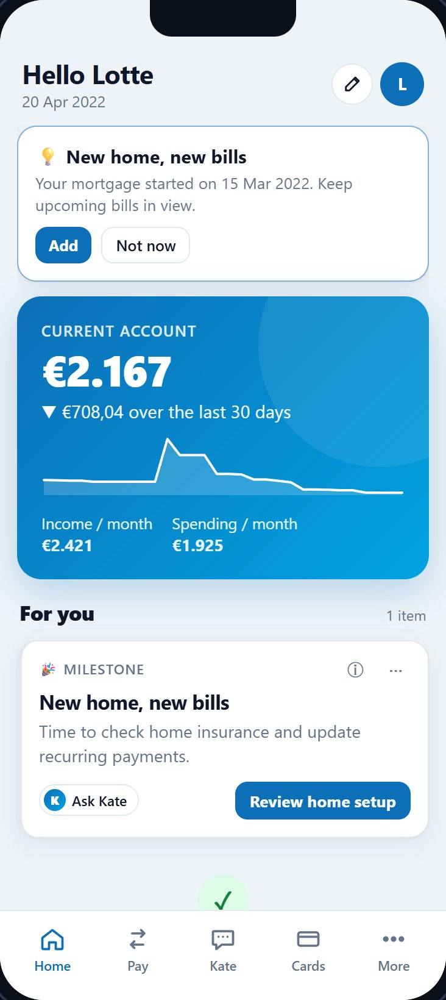
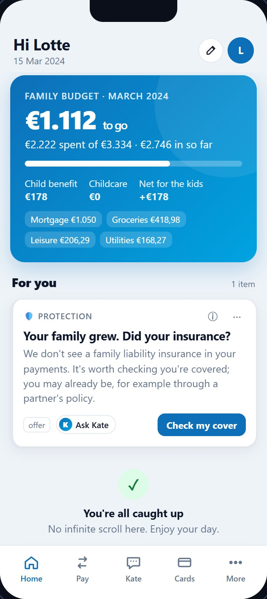

Tectonic Hackathon · KBC challenge
KBC
Adaptive Home
One banking app that composes itself around each customer's life.
Persona sets the stage. Moments fill it.
Today
0 million customers.
One home screen.
A student, a freelancing mum and a 71-year-old pensioner all open the same app.
What if every one of them got their own, without anyone designing 2.3 million screens?
The KBC challenge
Imagine a future where KBC perfectly understands what customers need and responds at exactly the right moment.
KBC, Tectonic Hackathon brief
Q1Signals
What tells us what a customer needs?
Q2Recognise
Situation, behaviour and intent
Q3Adapt
Experiences that adapt by themselves
Q4Channels
Across products, services, channels
Q5Millions
Impact for 2.3M at the same time
One working proof of concept answers all five. Watch for the Q tags.
Our answer
Persona sets
the stage.
Moments fill it.
Nobody designed the home screen you see. The engine composed it from signals in your own transactions.

The stageAdaptive layout
Who you are. Your persona mix picks the hero, the tiles, density and tone.
The momentsFor You feed
What is happening now. Ranked, explained, time-bound cards. And it ends.
Understand
Q1Signals
Signals KBC already has.
In your transactionsSignalOn your screen
SaraAG Insurance12 Oct 2025−€612
Yearly recurring paymentsoonCar insurance renews in 12 days
LotteBright Agencyinvoice+€7.150
Income from 4 clientspersonaFreelancer 59%
LotteGroeipakketmonthly+€178
Government flowpersonaYoung family 41%
LotteNotary payment15 Mar 2022new home
Life event: new homemilestoneNew home, new bills
JanTech Support Services BV−€1.250
Anomaly: new payeeurgentWas this you?
First-party only: no scraping, no social media. Every signal becomes plain-language evidence the customer can see.
Q2Recognise
Understand
Sara is not a segment.
Freelancer
Income from 7 clients · 96% of income from invoices · quarterly VAT
0
Young family
Groeipakket child benefit of €178 · daycare every month
0
Support
Q3Adapt
One life. An app that grows with it.
2018Student in Leuven
Student 100%
2021First salary

Student 62 · Young pro 38
2022Buys a home

Young pro 59 · Student 41
2024A baby

Young family 100%
2026Goes freelance
Freelancer 59 · Family 41
Support
Q3Right moment
The right moment, built in.
Every card has a lifecycle. It shows up early, escalates as the date nears, and disappears after it.
soonurgentDEADLINE€165/yr
Your car insurance renews in 12 days2 days
You paid €612 to AG Insurance last year. Here's what differs from comparable cover.
Renewal · 12 Oct
Earlyappears 45 days ahead
Soon≤ 14 days
Urgent≤ 3 days
Expiredgone, no nagging
score = persona fit × (.40 urgency + .30 impact + .20 confidence + .10 novelty) × fatigue
Urgent service firstMax 1 offer per 3 cardsMax 7 cards, then ✓ all caught up
Demo · real screens
One engine,
every life.
- One customer, eight years
- The layout follows her life
- Every card explains itself
- Kate, grounded in the card
- Jan, 71: calm and protected
Customer
Time travel · as of
15 Oct 2018Persona mix
Guide
Explained. Controlled. On your side.
Why am I seeing this?
On every card and every section: the evidence, from your own payments.
Yours to shape
Pin, hide, snooze, less like this. Every style setting starts on Auto. When life changes, the app suggests; you decide.
Kate proposes, you confirm
Grounded in the same cards. She can't change anything by herself.
Guide
Q4Channels
One brain, many surfaces.
One HomeResponse
per customer, recomputed on events
layoutcardsevidenceurgencyaction
App feed built
Everyday relevance, ranked and explained
Push designed
Only urgent and time-critical moments
Advisor designed
Sensitive moments, with the same evidence on screen
Kate built
Conversational, the cards are her context
Voice designed
"Read my day" for accessibility
Secure by design
Built the way a bank would.
No IDOR
Customer endpoints take the customer from the session, never from the URL. Covered by tests.
Hardened login
HMAC-signed HttpOnly cookies, PBKDF2 with 200k iterations, rate-limited login.
Validated input
Typed models with patterns and limits on every request. Bound SQL parameters only.
No script injection
CSP and security headers. The UI renders text nodes only, never HTML.
Kate can't act
She proposes; you confirm. Any LLM text must only use numbers from the grounded context.
Least privilege
Advisor role checked server-side; every lookup audit-logged. Ground truth never leaves the server.
Aikido AI code audit: [before] → [after] open issues
Millions at once
Q5Scale
Built for 2.3 million.
TriggerNightly + on events
Salary in, new recurring bill, a card changes stage
EnginePure function per customer
Deterministic, so it parallelises trivially
CacheOne HomeResponse
Per customer, ready before they open the app
App openA cache read
LLM optional, copy only: cost stays flat
0
to score all 1,003 synthetic customers, one process
0
per customer, layout + feed
0
CPU time for 2.3M customers extrapolated
Who the engine found
Dominant persona across the synthetic portfolio (n = 1,003)
Freelancer261
Young professional227
Young family206
Retiree204
Student105
Measured, not claimed
It finds what really happened.
0
dominant-persona precision
0
of injected life events surfaced in the feed
0
automated tests: synthetic data, features, personas, cards, ranker, layout, Kate, API incl. IDOR
What it raised across the portfolio
Cards generated for 1,003 synthetic customers, by type
Pension savings tip441
VAT reserve265
Price increase239
Scam awareness204
Cash-flow squeeze197
Duplicate charge156
Protection gap106
Idle cash73
Insurance renewal69
Runway50
Offline evaluation against injected ground truth · 1,000 synthetic customers, seed 42 · synthetic data only
Honest about what's next
From proof of concept to 2.3M.
Data
Real transactions
Tune detectors on messy merchant names. Today: synthetic only.
Models
Learn the ranker
Transparent rules today, by design. The contract lets trained models swap in.
Language
NL / FR copy
An LLM for tone only; every number validated or discarded.
Safety
Review + research
GDPR, IDD / MiFID, fairness, and user tests of adaptive layouts.
Thank you.
KBC Adaptive Home. Persona sets the stage, moments fill it.
[Team name] · [github.com/your-repo]